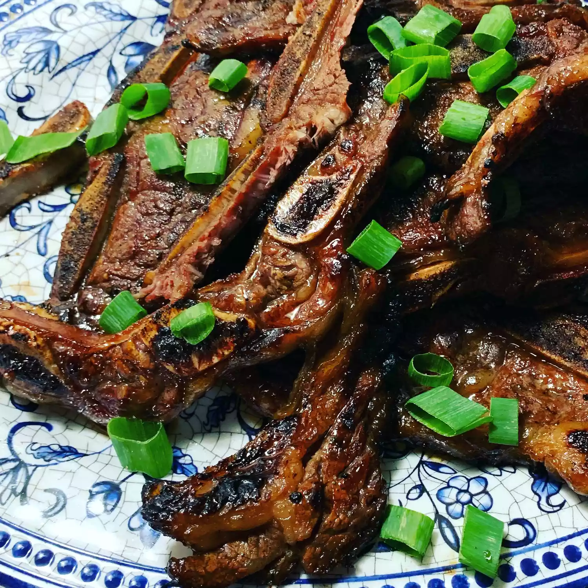

Kalbi recipe

How to Make Kalbi (Korean BBQ Short Ribs)
What is Kalbi?
Marinate flanken-style or Korean-style short ribs in a cola-based marinade for a couple hours to turn it into beef that's "sweet, spicy, and very tender,".
Kalbi ingredients
Use the following ingredients for your amazing Kalbi:
Beef Short ribs
Green Onion
Make your own marinade from the following ingredients:
Cola-flavored carbonated beverage (such as Coca-Cola®)
Soy Sauce
White Sugar
Sesame Oil
Sesame Seeds
Black Pepper
Minced Garlic
Steps
To make your Kalbi (Korean BBQ Short Ribs), follow these two simple steps:
Marinate the Ribs
Combine cola beverage, white sugar, soy sauce, water, green onions, sesame oil, garlic, sesame seeds, and black pepper in a bowl until marinade is well-mixed.Place short ribs in a resealable plastic bag and pour in marinade. Squeeze out excess air and seal the bag. Marinate in the refrigerator for a couple of hours.Cook the Ribs
Cook short ribs on an outdoor grill for medium-high heat. Do not forget to lightly oil the grate. Cook until browned, 3 to 5 minutes per side.